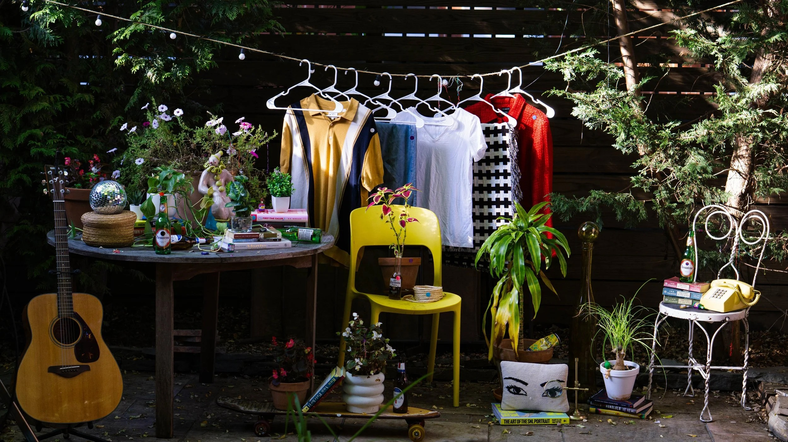
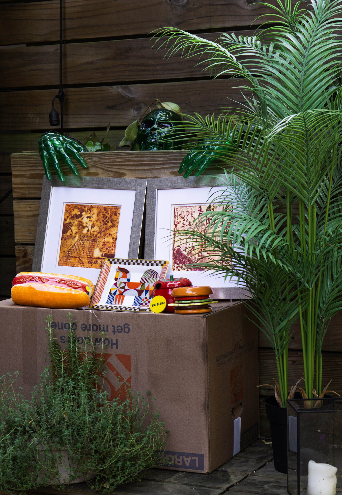
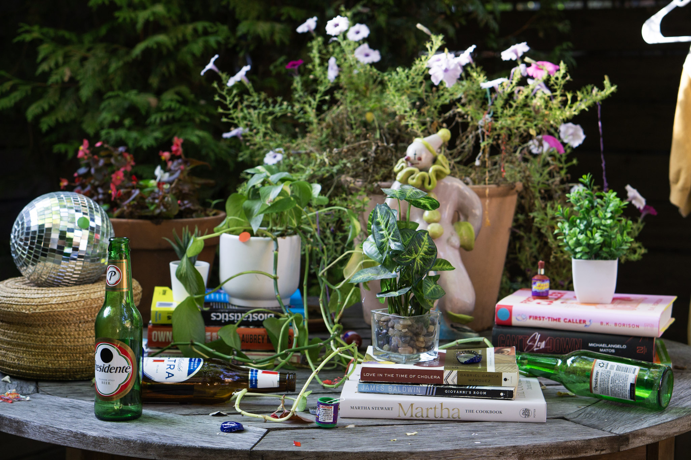
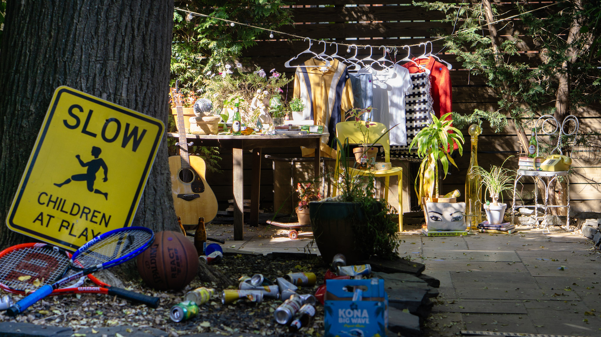

Things
My respect for and admiration of the noble Thing, Object, Trinket, Tchotchke has translated to a hobby in set design and prop styling.
On the set of my roommate's short film, I sourced and styled over one hundred props to build the project's primary set. With a humble budget of $30 and the support of a stellar production design team, here’s what I came up with.

- Let’s set the scene.
- Your roommate brings you to her coworker’s backyard for a party.
- They're moving out and throwing a housecooling. Anyone is welcome.
- Unwanted trinkets, secondhand clothes, and empty cans everywhere.
- And all of it is up for grabs. Free.99. Take a look around.


